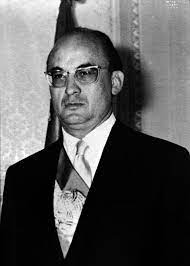

¿Cómo se creo?
El Colegio de Bachilleres fue creado por decreto presidencial en septiembre de 1973 para impartir y promover la educación equivalente al nivel medio superior. Se describe como una institución estatal descentralizada con personalidad jurídica y patrimonio propio.
¿Dónde se fundó?
Fue fundado en la Ciudad de México durante el gobierno del entonces presidente Luis Echeverría Álvarez.
